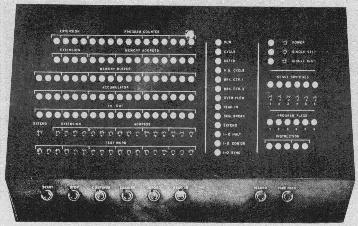

- software -
|
Department of Energy Office of Scientific and Technical Information Energy Science and Technology Software Center P. . Department of Energy Energy Science and Technology Software Center The Energy Science and Technology Software Center (ESTSC) is the U. Department of Energy's (DOE) centralized software management facility. Operated by the DOE Office of Scientific and Technical Information (OSTI), the ESTSC licenses and distributes Federally funded scientific and technical software developed by the national laboratories, other facilities and DOE contractors. |
New Technology has been in business since 1993, and since then has expanded to list more than 1000 titles. E-mail NOW to order your copy Available from stock Caldera Linux 2. Hopefully this will stop Europe allowing software to be patented. if you use free software, this IS a very important issue. .
|  |
graphics automation for MTV's Total Request Live (TRL). . Video Design Interactive launches EmailToAir software at MTV's TRL. Video Design Software acquires Video Design Graphics paint and animation software product line from Chyron. The Video Design Group services the broadcast, film and post-production industries with state-of-the-art software and hardware solutions. |
|
graphics automation for MTV's Total Request Live (TRL). . Video Design Interactive launches EmailToAir software at MTV's TRL. Video Design Software acquires Video Design Graphics paint and animation software product line from Chyron. The Video Design Group services the broadcast, film and post-production industries with state-of-the-art software and hardware solutions. |
another software site: http://www.sgi.com/software/opengl/